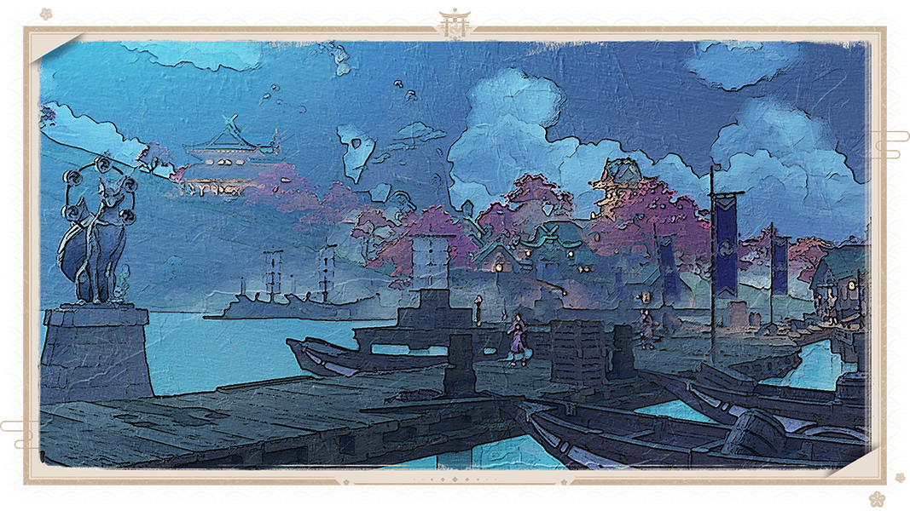

Инадзумские странствия
Мне всегда хотелось исследовать каждый уголок Тейвата в роли отважного мореплавателя. Я пишу эти строки вскоре после того, как присоединился к флоту и ступил на палубу «Чёрного пламени», направляющегося в Инадзуму. Мне стыдно признаться, что это мой первый выход в море. Даже не знаю, что я буду делать, если начнётся шторм. Старпом Тун Шэн не очень разговорчив, но он научил меня многому о мореплавании. А старый моряк, с которыми я делю каюту, в свободное время рассказывает мне об Инадзуме. Я всё записываю, чтобы скоротать время в долгом плавании.
Инадзума - страна вечности. Я слышал, что её окружают бури и шторма. Чтобы пройти через них, требуется команда из опытных моряков и прочный корабль. Но эти шторма стоит преодолеть, чтобы увидеть завораживающие пейзажи Инадзумы. Когда я впервые услышал об этом, то подумал, что моряки преувеличивают опасность штормов, чтобы набить себе цену. Однако вчера я испытал на себе всю мощь шторма, и это заставило меня понять, как трудно зарабатывать себе на жизнь на просторах океана, и ещё больше плениться Инадзумой. Должен признаться, что, проведя столько времени в море, я соскучился по суше, по земле под ногами и её запаху. Но если бы мне пришлось выбирать снова, я бы без раздумий ступил на палубу. В конце концов, жизнь в море куда интереснее постылой рутины. В мире так много тайн, ждущих разгадки, и историй, которые готовы быть выслушанными.
Говорят, что обычаи Инадзумы разительно отличаются от обычаев других наций. В отличие от Мондштадта и Ли Юэ, Инадзума состоит из множества островов, расположенных посреди океана. Маленькие острова окружают большие, и для передвижения между ними используются лодки и корабли.

Мы направляемся на остров Рито. Он находится рядом с островом Наруками, на котором расположен город Инадзума. Весь остров усажен сакурами. Когда наступает время, они расцветают и становятся похожими на плывущие по небу облака. Прохожему достаточно одного неосторожного движения, чтобы оказаться под дождём из лепестков... Старый моряк с гордостью показывал мне рисунок инадзумского святилища. Было видно, сколько сил он вложил в работу. Воспоминания об этих деревьях и впрямь невозможно стереть из памяти.
Мы направляемся на остров Рито. Он находится рядом с островом Наруками, на котором расположен город Инадзума. Весь остров усажен сакурами. Когда наступает время, они расцветают и становятся похожими на плывущие по небу облака. Прохожему достаточно одного неосторожного движения, чтобы оказаться под дождём из лепестков... Старый моряк с гордостью показывал мне рисунок инадзумского святилища. Было видно, сколько сил он вложил в работу. Воспоминания об этих деревьях и впрямь невозможно стереть из памяти.

Все прибывающие в Инадзуму иностранцы проходят через остров Рито. Прежде чем попасть в Инадзуму, нужно пройти регистрацию в комиссии Кандзё. В противном случае можно столкнуться с ненужными неприятностями. Старый моряк рассказал мне об этом таким серьёзным тоном, что я заподозрил за его словами печальный личный опыт. Но стоит оказаться на Рито - и путник может отдохнуть и окунуться в неповторимую атмосферу Инадзумы.

За время плавания я соскучился по нормальной еде. Уверен, что в Инадзуме будет большой выбор вкусных блюд. Старый моряк описал мне блюдо под названием тэмпура с сакурой. Золотистое и хрустящее, со слабым ароматом цветков сакуры. Стоит откусить кусочек, как хрустящая корочка начинает таять во рту, уступая место вкуснейшей начинке. Старый моряк договорил и сглотнул слюну, и я сам почувствовал, что немного проголодался. Это заставило меня с ещё большим предвкушением ждать прибытия в Инадзуму.
Мне пора возвращаться на палубу. На этом я заканчиваю сегодняшние записи. Впереди слышны звуки шторма. Говорят, что он был намеренно создан сёгуном Райдэн. Наверное, для это были веские причины. В свободное время стоит ещё поговорить со старым моряком о древних легендах Инадзумы. Уверен, будет интересно. У меня в багаже есть ещё бутылка заветного вина, которое как нельзя лучше подойдет для такого момента...